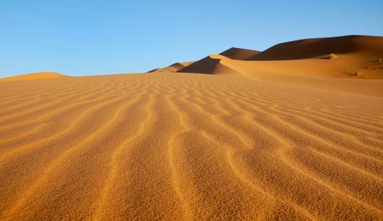
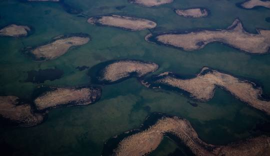
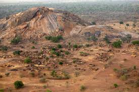

Bandera

La capital de Chad es N'Djamena, ubicada en el suroeste del país, cerca del río Chari y la frontera con Camerún.
Los idiomas oficiales de Chad son el francés y el árabe, aunque hay más de 120 lenguas y dialectos hablados en todo el país.
La moneda oficial de Chad es el Franco CFA, que se utiliza en varios países de África Central.
Chad tiene una población estimada de aproximadamente 17 millones de habitantes, distribuidos en una diversidad de etnias y grupos culturales.
Chad es una república presidencialista. El presidente tiene un papel destacado en la toma de decisiones políticas y gobierna junto con una asamblea nacional.
Chad ofrece varios atractivos turísticos, como el Desierto del Sáhara en el norte, el Lago Chad y el Parque Nacional de Zakouma, conocido por su vida silvestre, incluyendo elefantes, jirafas y leones.
  La gastronomía de Chad está influenciada por la comida subsahariana. Algunos platos típicos incluyen el boul (un puré hecho de mijo o sorgo), y el jarret (un estofado de carne).
Chad es un país con una rica herencia cultural. Las danzas tradicionales varían entre los diferentes grupos étnicos, pero todas tienen un papel importante en las celebraciones y ceremonias. La música es igualmente diversa, destacando el uso de tambores y otros instrumentos tradicionales.